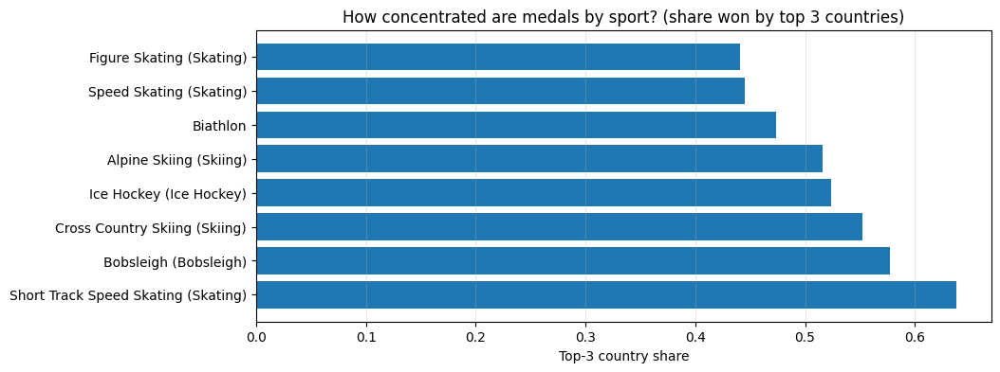

The Winter Olympics feel global, but the medal table often looks the same year on year. So I used results.csv (a full Olympics results dataset) and filtered to Winter Games to ask:
Who dominates the Winter Olympics?
Which sports “belong” to a small set of countries?
import pandas as pdimport numpy as npimport matplotlib.pyplot as pltdf = pd.read_csv("results.csv", low_memory=False)df.columns = [c.strip() for c in df.columns]print("Columns:", df.columns.tolist())print("Shape:", df.shape)df.head()
The Winter Olympics are not one competition — they’re many sports.
So I asked: for each sport, do medals spread across lots of countries or concentrate in a few?
top_sports = winter_df[sport_col].value_counts().head(8).index.tolist()sport_country = ( winter_df[winter_df[sport_col].isin(top_sports)] .groupby([sport_col, noc_col])[medal_col] .size() .reset_index(name="medals"))shares = []for s in top_sports: sub = sport_country[sport_country[sport_col] == s].sort_values("medals", ascending=False) total = sub["medals"].sum() top3 = sub["medals"].head(3).sum() shares.append({"sport": s, "top3_share": top3/total if total else np.nan, "total_medals": total})shares_df = pd.DataFrame(shares).sort_values("top3_share", ascending=False)shares_df
sport
top3_share
total_medals
7
Short Track Speed Skating (Skating)
0.637850
428
6
Bobsleigh (Bobsleigh)
0.577007
461
1
Cross Country Skiing (Skiing)
0.552632
950
0
Ice Hockey (Ice Hockey)
0.523429
1878
3
Alpine Skiing (Skiing)
0.516014
562
4
Biathlon
0.473310
562
2
Speed Skating (Skating)
0.444892
744
5
Figure Skating (Skating)
0.440644
497
plt.figure(figsize=(10,4))plt.barh(shares_df["sport"], shares_df["top3_share"])plt.title("How concentrated are medals by sport? (share won by top 3 countries)")plt.xlabel("Top-3 country share")plt.grid(True, axis="x", alpha=0.3)plt.show()

Conclusion
Two things stood out:
Dominance comes in eras : the “top” isn’t fixed forever.
Some sports are highly concentrated, meaning a small set of countries win a huge share of medals.
So the Winter Olympics aren’t just about “best athletes.” They’re also about infrastructure, climate, national investment, and which sports a country can realistically build pipelines for.
In other words: it’s a competition — but it’s not starting from an equal baseline.